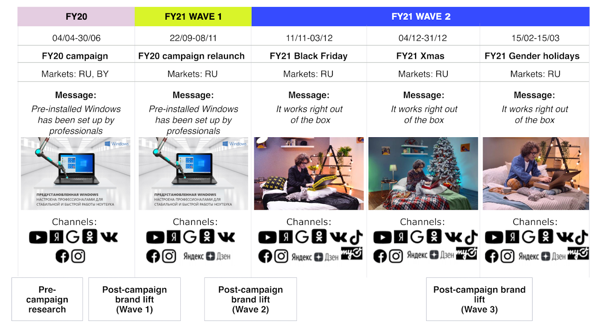
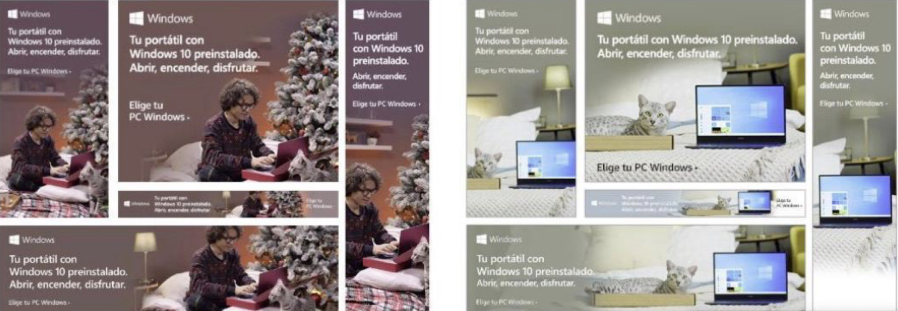

Microsoft Windows
Made the value of genuine Windows visible at purchase.
The work was not about making a nicer ad. The problem was belief: people did not see why pre-installed genuine Windows should matter enough to affect laptop choice.
Problem
People treated genuine Windows as an invisible default. The client initially did not want to spend time on research, but I pushed for it because the problem was not media reach. It was the absence of a persuasive reason to care.
Insight
The strategy reframed genuine Windows as the foundation for a laptop that works properly, safely and predictably. The campaign had to make invisible software value visible at the moment of buying a laptop.
I owned the research logic, the insight, the messaging system and the channel breakdown.
System
I turned the campaign into a measurement loop: start from the belief barrier, define the attributes that had to move, launch against a clear message, read BHT every 2-3 months and adjust the creative route when perception stopped improving.

Campaign system
Built a flighting logic that let the campaign learn and evolve over time.
The campaign was not a one-off launch. It moved through several waves, messages and seasonal contexts, with brand-lift research used between waves to understand what had moved and what needed to change.
Results
Microsoft European HQ recognized the research and measurement approach behind the Value of Genuine Windows campaign as a benchmark for future launches. That was the strongest signal: the work was not just a local creative route, but a process the organization could reuse.
The client also hit the laptop-sales target at about 60% of the planned budget, with remaining budget running above target.
Brand-health tracking moved the attributes the campaign was designed to shift. The strongest lift was willingness to recommend laptops with Windows 10 pre-installed; security, quality, trouble-free use and performance also moved.
Willingness to recommend laptops with Windows 10 pre-installed.
A laptop with Windows 10 pre-installed is more secure.
Pre-installed Windows 10 is a guarantee of high-quality laptop operation.
Pre-installed Windows ensures trouble-free use throughout the laptop lifespan.
Pre-installed Windows OS ensures high laptop performance throughout its lifespan.
The operating system is understood as a separate program.

Scale-up
The benchmark campaign was extended to Spain.
After the methodology was recognized as a launch benchmark, the campaign was adapted for Spain. Despite a different cultural context, the same value logic continued to work well in-market.